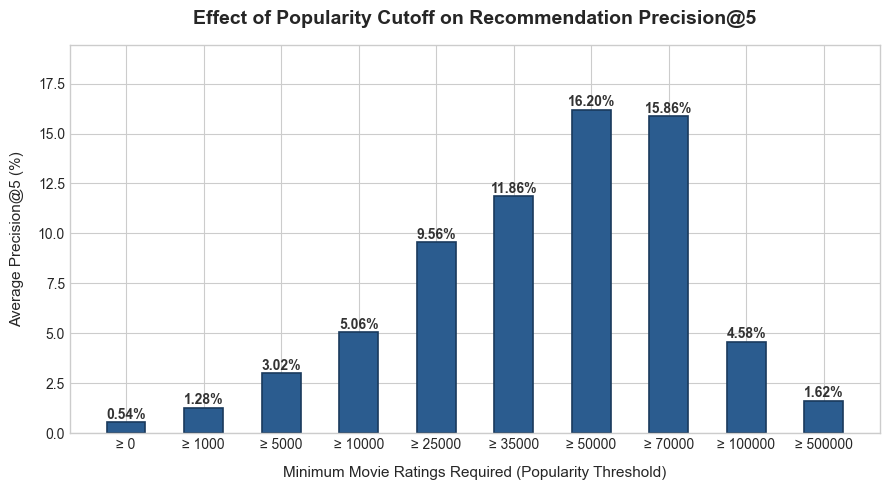
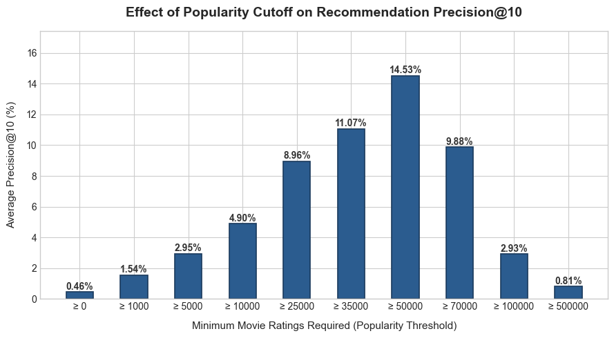

Select a movie to see what the model suggests next:
Movie recommendation is one of the most famous problems motivating the creation of recommender systems. Indeed, Netflix has been a major funder for the research and development of these systems. With thousands of titles available to a user at any given time, presenting a few highly relevant options is no easy feat. This is a prime example of the "long-tail," a paradigm of online business and mass media in the 21st century that has motivated this research. In this project, a simple content-based model is implemented to surface relevant movies to a user.
The model works by mapping movies into a vector space based on their genre metadata. By treating each movie as a point in this space, we can generate recommendations by finding its nearest mathematical neighbors. This provides the basis for the interactive item-item recommendation system above.
This approach is then extended to a user-item system using the MovieLens 32M dataset, allowing a user's full watch history to guide the model. To rigorously evaluate the system, we train the model on a historical subset of the provided user data. We leverage the watch history in two distinct ways: one by considering implicit feedback, and the other through explicit feedback. The success of the model is then compared between these two approaches.
In the MovieLens dataset, the movies.csv file is organized into rows, where each row represents a distinct movie possessing several features. The primary feature this model uses to make recommendations is a movie's genres.
| movieId | title | genres |
|---|---|---|
| 1 | Toy Story (1995) | Adventure|Animation|Children|Comedy|Fantasy |
| 2 | Jumanji (1995) | Adventure|Children|Fantasy |
| 3 | Grumpier Old Men (1995) | Comedy|Romance |
Example: df_movies.head(3)
There are 20 possible genres that any given film can have. Therefore, we map each movie \(i\) to a 20-dimensional binary vector, denoted as \(\mathbf{m}_i \in \{0,1\}^{20}\). Non-zero entries in this vector correspond to the genres that the film fits into. This is a one-hot encoding of the film. By stacking these row vectors, we construct the movie-genre matrix \(M\). In this matrix, every row represents a single movie and every column represents one of the 20 genres.
With the movies represented in this way, the item-item recommendation system is essentially a nearest-neighbor search. Given a particular movie, we need to find the "closest" movies in this 20-dimensional vector space.
To evaluate the proximity of any two movies, Cosine Similarity is utilized over Euclidean distance to maintain invariance with respect to vector magnitude. For any two unnormalized movie vectors \(\mathbf{u}, \mathbf{v} \in \{0,1\}^{20}\), we compute their similarity using the formula:
\[\text{Sim}(\mathbf{u}, \mathbf{v}) = \cos(\theta) = \frac{\mathbf{u} \cdot \mathbf{v}}{\Vert{}\mathbf{u}\Vert{}_2 \Vert{}\mathbf{v}\Vert{}_2}\]Notice that dividing by the \(L_2\)-norms normalizes the vectors on the fly during the calculation. This ensures that a movie tagged with five genres isn't unfairly penalized when compared to a movie with only one. For the item-item system, once a user selects a movie, we compute its similarity score against every other movie in the database and return the top 5 highest-scoring films.
While item-item recommendation is useful, it is not always ideal in the broader context of personalized media. We want to leverage a user's entire watch history—not just their most recently watched movie—when generating predictions. This motivates the bridge to a user-item recommender.
To achieve this, we continue to use cosine similarity to find nearest neighbors, but we introduce a user profile, denoted as \(\mathbf{p}_u\). Like the movie vectors, the user profile lives in \(\mathbb{R}^{20}\). However, instead of binary values, the user profile contains continuous, weighted scores in each entry corresponding to the user's affinity for that particular genre.
To construct \(\mathbf{p}_u\), we must determine how to interpret user feedback. This leads us to compare two distinct approaches: implicit and explicit feedback.
In the implicit feedback model, every time a user watches a movie of a particular genre, it is recorded as a "hit" for that genre, regardless of the actual rating they assigned the film. Think of this like a social media algorithm feeding you a specific type of video simply because you linger on it, not necessarily because you "liked" it.
Mathematically, we can represent a user's watch history as a sparse binary vector \(\mathbf{w}_u\), where the \(i\)-th entry is \(1\) if the user watched movie \(i\), and \(0\) otherwise. Because we previously constructed the movie-genre matrix \(M\), we can elegantly compute the unnormalized user profile \(\tilde{\mathbf{p}}_u\) using a single matrix multiplication:
\[\tilde{\mathbf{p}}_u = \mathbf{w}_u M\]It is crucial that the matrix \(M\) contains the raw, unnormalized binary genre vectors here, allowing the user profile to accurately accumulate the sheer volume of genres watched. Once we have \(\tilde{\mathbf{p}}_u\), we normalize it with respect to the \(L_2\)-norm to yield the final user profile \(\mathbf{p}_u \in \mathbb{R}^{20}\):
\[\mathbf{p}_u = \frac{\tilde{\mathbf{p}}_u}{\Vert{}\tilde{\mathbf{p}}_u\Vert{}_2}\]When we compute the cosine similarity between this normalized user profile \(\mathbf{p}_u\) and a movie, we must also temporarily normalize that movie's vector \(\mathbf{m}_i\). With both vectors normalized, the cosine similarity simplifies beautifully to a standard dot product: \(\text{Sim}(\mathbf{p}_u, \mathbf{m}_i) = \mathbf{p}_u \cdot \frac{\mathbf{m}_i}{\Vert{}\mathbf{m}_i\Vert{}_2}\).
Alternatively, we can construct a user profile using explicit feedback—the actual star ratings the user assigned. The intuition here is that if a user rates horror movies highly (e.g., 5 stars) and romance movies poorly (e.g., 1 star), their mathematical profile should naturally pull toward horror and repel romance.
To carry this out, we first mean-center all of a user's ratings. Let \(r_{ui}\) be the rating user \(u\) gave to movie \(i\), and let \(\bar{r}_u\) be that user's average rating across all movies. The centered rating \(\hat{r}_{ui}\) is:
\[\hat{r}_{ui} = r_{ui} - \bar{r}_u\]By structuring all of a user's centered ratings into a sparse vector \(\mathbf{r}_u\) (where unrated movies are treated as zero), we compute the explicit user profile using the exact same matrix multiplication framework as the implicit model:
\[\mathbf{p}_u = \mathbf{r}_u M\]This effectively scales each raw movie genre vector by how much the user liked or disliked it before summing them together. Finally, we compute the cosine similarity between this explicit user profile and the movie matrix just as we did before, surfacing the top 5 highest-scoring movies as recommendations.
To see the mechanics of how this approach can be implemented, the complete pipeline is available to view as a Jupyter notebook on my github.
To rigorously evaluate the model's predictive capability, an 80/20 train-test split on the user ratings data was performed.
The performance is measured using the Precision@\(k\) metric, where \(k\) is a positive integer representing the recommendation list size. This metric answers a straightforward question: out of \(k\) recommendations presented to a user, what proportion did they actually watch?
Let \(U\) be the set of all users in the evaluation sample. For any user \(u \in U\):
The intersection \(T_u^k \cap W_u\) represents the recommendations that were successfully watched. An individual user's precision score is given by \(\frac{\vert{}T_u^k \cap W_u\vert{}}{k}\). To evaluate the system globally across all users, we compute the Average Precision@\(k\):
\[\text{Average Precision@}k = \frac{1}{\vert{}U\vert{}}\sum_{u\in U}\frac{\vert{}T_u^k\cap W_u\vert{}}{k}\]As a baseline for this metric, the Precision@K was evaluated with \(k=5\) for recommendations that were randomly generated for a user. This yielded a 0.06% Precision@5 score.
Now, we evaluate the Preicision@5 score of both the implicit and explicit models:
==================================================
MODEL EVALUATION RESULTS (k = 5)
==================================================
[+] Implicit Feedback Model
└── Average Precision@5 : 0.0030 (0.30%)
[+] Explicit Feedback Model
└── Average Precision@5 : 0.0054 (0.54%)
==================================================Two immediate observations emerge from these results:
Expanding the recommendation window to \(k=10\) reveals an interesting shift in model behavior:
==================================================
MODEL EVALUATION RESULTS (k = 10)
==================================================
[+] Implicit Feedback Model
└── Average Precision@10 : 0.0043 (0.43%)
[+] Explicit Feedback Model
└── Average Precision@10 : 0.0046 (0.46%)
==================================================When surfacing a slightly broader list of recommendations, the performance gap between the two approaches collapses. The explicit feedback model leads by only 0.03%, calling into question how much more effective explicit star ratings truly are when digging deeper into a user's taste profile. This opens a possible avenue for future research: how much should a recommendation engine "trust" explicit self-reported ratings versus implicit behavioral patterns?
For context, state-of-the-art collaborative filtering and hybrid recommendation architectures trained on similar MovieLens datasets can achieve Precision@10 scores around 30%.
Suppose we have a user's profile \(\mathbf{u}\) that is equally close to two movies, \(\mathbf{m}_1\) and \(\mathbf{m}_2\), in the \(L_2\) norm. How do we pick which movie should be recommended? Now, what if I add some context: let's say \(\mathbf{m}_1\) is a feature-length film from the last 30 years with a wide theatrical release, and \(\mathbf{m}_2\) is an obscure short film made in the 1940s. Is the decision any easier?
We might naturally suspect that recommending the more "popular" movie will perform better by our evaluation metric. Let's see if introducing a popularity mask to our system makes our Precision@k score go up at all.
All we need is a metric for popularity, which we define by the total number of ratings a movie has received. For any fixed cutoff point \(N \in \mathbb{N}\), we restrict our candidate pool to only include films with at least \(N\) ratings. Let's calculate the Precision@5 score for the explicit feedback model with this a popularity filter of \(N=1000\) and see how it stacks up against our earlier baselines:
==================================================
MODEL EVALUATION RESULTS (k = 5)
==================================================
[+] Implicit Feedback Model
└── Average Precision@5 : 0.0030 (0.30%)
[+] Explicit Feedback Model
└── Average Precision@5 : 0.0054 (0.54%)
[+] Explicit Feedback Model + Popularity Mask N = 1000
└── Average Precision@5 : 0.0128 (1.28%)
==================================================The new model jumps to 1.28%. That's over twice as good as the explicit feedback model without popularity filtering! It appears that, by our defined metric, a recommender system benefits significantly from putting popularity restrictions on its output. Let's see if testing different cutoff points \(N\) allows us to find the optimal parameter for the model.

Wow. By simply restricting our output to popular movies, we were able to obtain a model scoring over 16% on Precision@5. That peak occurred when we only recommended movies with at least 50,000 ratings.
Let's run this experiment again, but this time computing the Precision@10 scores across different cutoffs:

Recall the previously cited figure that state-of-the-art collaborative filtering models achieve around a 30% Precision@10 score. Compared to the Precision@10 scores computed above, the gap between our simple content-based model and a collaborative filtering architecture suddenly seems much less imposing.
For those of us interested in "popular" culture, the popularity filter has proved itself a boon for making recommendations. Introducing a popularity filter is like building a bridge between the clean ideal of mathematics and the messy reality of human culture. The interactive web app above implements the popularity filter with the popularity cutoff set at \(N=50,000\).
One obvious trade-off is that the system will no longer recommend items deemed less popular, effectively removing the opportunity for users to discover emerging titles. In the case of movies, restricting recommendations to films with over 50,000 ratings means that a film must already have enough real-life "cultural support" to enter the candidate pool. This inevitably excludes some lower-budget or indie films.
For more democratic platforms like YouTube, this limitation would create a major problem, especially for a site prized for its ability to surface new creators and entertainers from obscurity.